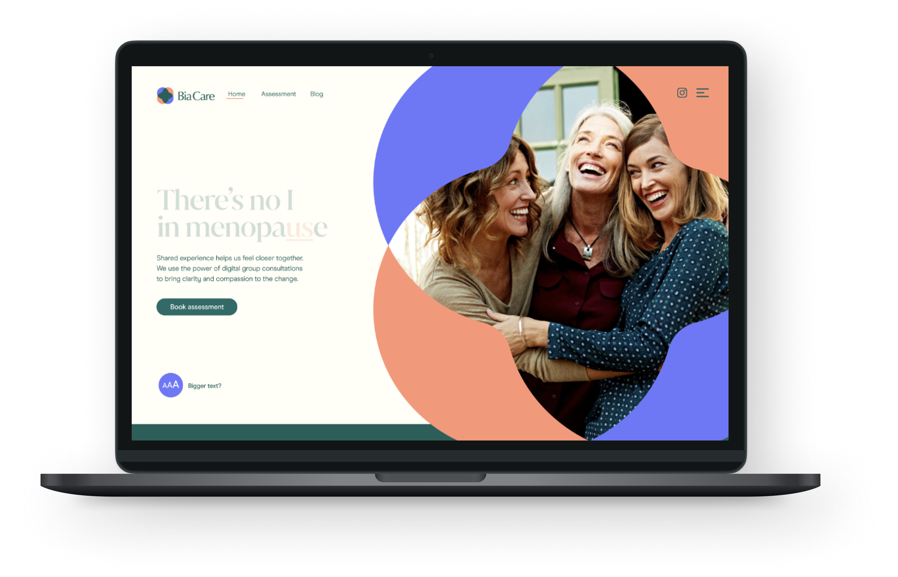

01
Bia Care
The Opportunity
Menopause care
in the UK was broken.
3 in 5 women couldn't access local NHS menopause services. The ratio of menopause experts to women aged 45–55: 1 to 14,400.

The First Bet
Our first product had
low willingness to pay.
Despite a strong waiting list for our holistic 12-week program, what people said they wanted and what they'd pay for were different things.
The Second Bet
We launched the first regulated private
group consultation
clinic in the UK.
From group assignment and video consultation through to prescription and followup care.
Clinical outcome: 52% improvement in symptoms.

The Impact
First NHS-commissioned
menopause service.
menopause service.
£200k
ARR across private
and NHS
and NHS
100k+
NHS patient population
covered
covered
1:6
Patient to clinician
ratio
ratio
2021
RCGP Annual Conference
research award
research award
Why this matters for Neko?
I've shipped innovative consumer-facing products on top of regulated clinical infrastructure, and the NHS commissioned the result.